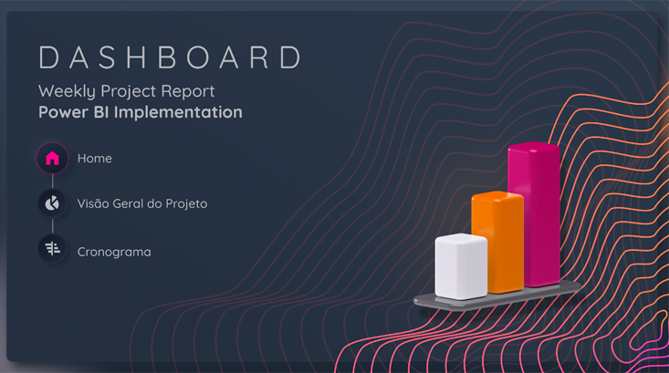

Sobre mim
E aí, galera! Meu nome é Pedro, tenho 24 anos e sou estudante de Engenharia de Software.
O Power BI é uma ferramenta incrível de visualização de dados, e meu objetivo com ela é ser capaz de ajudar às lideranças a tomar as melhores decisões possíveis, fornecendo insights valiosos.
Marketing Analytics
Dashboard de Marketing Analytics, desenvolvido com dados fictícios de anúncios do Facebook Ads e Google Ads, obtidos durante o curso de Business Intelligence com Power BI no Senac.
Weekly Project Report
Dashboard Relatório Semanal, visão do progresso de um projeto com dados fictícios obtidos durante o curso de Business Intelligence com Power BI no Senac.
Dashboard de Vendas E-Commerce
Este foi meu primeiro Dashboard, oferece uma análise de faturamento de produtos de e-commerce de tecnologia, com dados fictícios obtidos durante o curso de Business Intelligence com Power BI no Senac.
Contato
pedroaltran@live.com